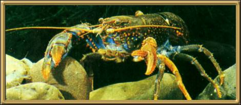

Photographer: Unknown
An Australian freshwater crayfish, that looks a little like a small lobster. There is a yabby farm up in Mildura where they breed the most gorgeous colored yabbies in a variety of colors, including a stunning opalescent one. They tend to be found in murky water, and their claws are quite formidable. Nonetheless, Yabbying has been a favourite pastime of many Australian children for a very long time.
This is the last in the series of insects and things. Please choose 'Home' to select another area to view, or 'Next' to sign my Guestbook.